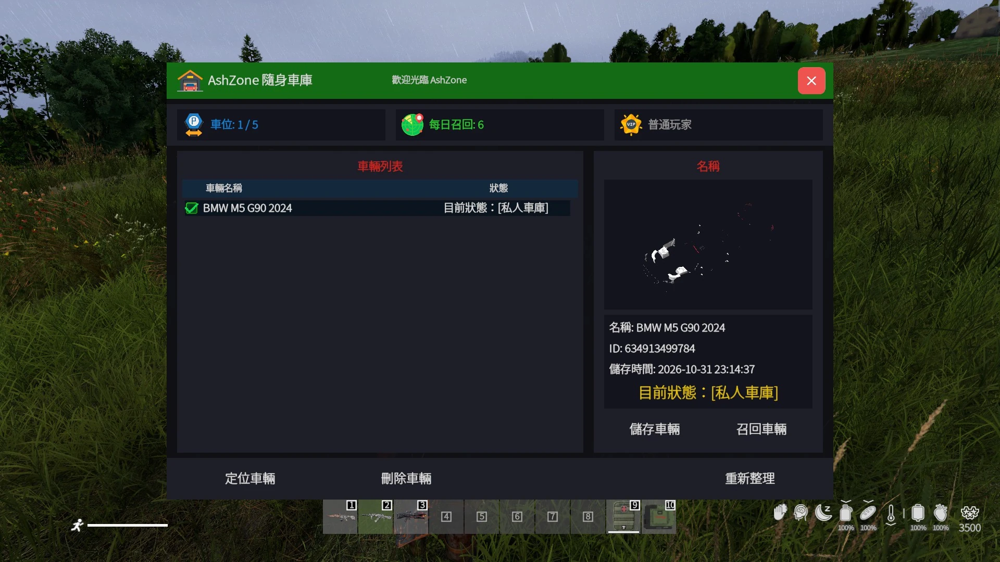
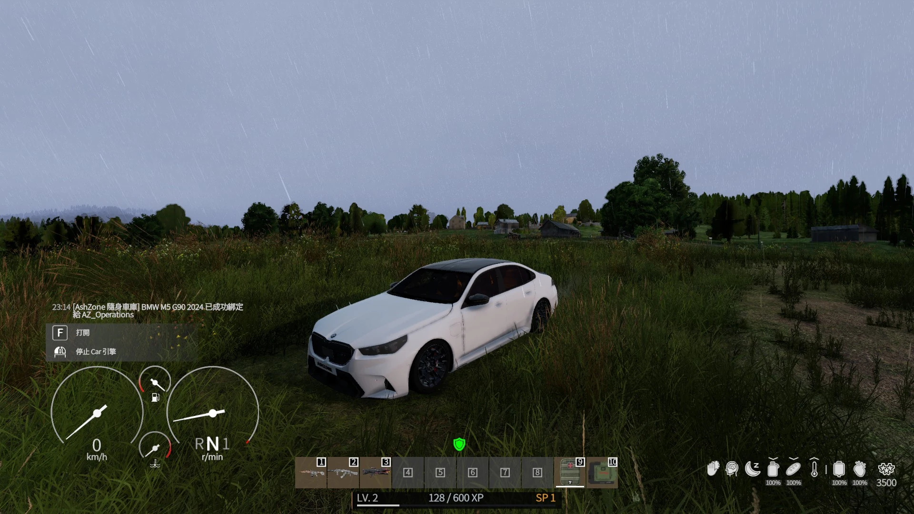
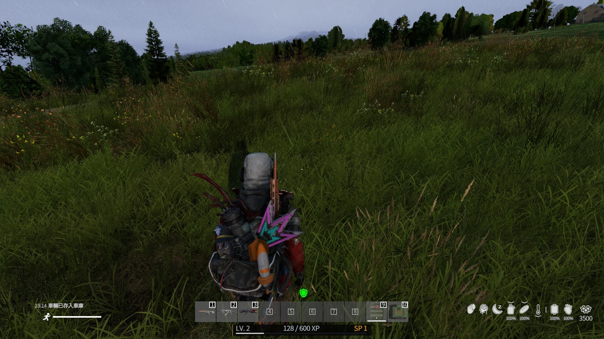

隨身車庫
將自己的載具綁定後存入個人車庫，需要時再從任何可使用隨身車庫的地點召回。每位玩家都有獨立車位與每日召回次數，綁定後的載具只有本人可以存放。
5 台每人基本車位
5 次一般會員每日召回
10 次VIP 每日召回
綁定制只有本人可存放

1
快捷鍵
最常用的兩個操作可以直接用鍵盤完成。
左 Shift＋1
開啟隨身車庫
查看目前已存放的載具、剩餘車位、每日召回次數與車輛狀態。
左 Shift＋2
存放目前車輛
完成載具綁定後，使用此快捷鍵把自己的車輛存入隨身車庫。
2
第一步｜先綁定你的載具
隨身車庫採用載具綁定制，沒有先綁定就無法正常管理車輛。

如何綁定？
1
坐上要使用的載具
先確認這台車是你要納入個人隨身車庫管理的載具。
2
啟動載具
成功啟動後，系統會將車輛綁定至你的角色。
3
確認綁定訊息
看到「已成功綁定」通知後，就能使用隨身車庫存放。
重要：載具綁定後，只有綁定本人可以把這台車存入隨身車庫。其他玩家即使能駕駛，也不能代替你存車。
3
第二步｜存放車輛
綁定完成後，即可把載具收進個人車庫。
存車方式
1
確認車輛已綁定
沒有綁定，或綁定在其他玩家名下的車輛無法存放。
2
按左 Shift + 2
系統成功處理後，車輛會被收進你的隨身車庫。
3
確認存放通知
畫面顯示「車輛已存入車庫」後，即代表存放完成。

4
第三步｜從車庫召回載具
召回就是把已經存進隨身車庫的車重新取出。
召回流程
1
按左 Shift + 1
開啟個人隨身車庫。
2
選擇車輛
左側列表會顯示你目前已存放的載具。
3
按「召回車輛」
成功召回會消耗 1 次當日召回次數。
5
車位上限與每日召回次數
車位與召回次數是兩個不同限制，請不要混在一起。
5 台基本車位上限
每位玩家預設最多可存放 5 台載具。需要更多車位時，可向管理員購買額外車位。
5 次 / 日一般會員
一般會員每天可從隨身車庫召回載具 5 次。
10 次 / 日VIP 會員
VIP 會員每天可從隨身車庫召回載具 10 次。
想增加車位？
基本車位用完後，可向 管理員購買額外車位。擴充後可存放更多個人載具。
召回次數用完？
每日免費召回次數使用完畢後，可前往 商城購買額外召回次數。
6
使用注意事項
存車前先確認綁定、車位與每日次數，可以避免大部分操作問題。
| 載具綁定 | 先上車並啟動，看到成功綁定通知後再進行存放。 |
|---|---|
| 綁定權限 | 綁定後只有本人可以將該載具存入隨身車庫。 |
| 基本車位 | 每位玩家最多 5 台；額外車位可向管理員購買。 |
| 一般會員 | 每日 5 次召回。 |
| VIP 會員 | 每日 10 次召回。 |
| 額外召回 | 可於商城購買額外召回次數。 |
先綁定，再存車；需要時再召回。
把常用載具放進自己的隨身車庫，不用每次重新尋找停車位置。